Scrolling Though
the Years
When content extends outside of a window, a scrollbar acts as a railway to guide along the cart of data. Without these wonderful trails we would only have a limited amount of information available per page. The internet would read like a book, honestly, who wants something as strenuous as that.
Alan Kay is often credited with the invention of the scrollbar. This legend not only led to the development of the internet itself (through exposure to ARPAnet), he also developed prototypes that would become the personal computer. If you'd like to learn more about Kay and his contributions check his story out here.
Below you'll see a collection of scrollbars in respective order based upon their date of inception. Note the minute innovations made that appeal to modern preferences.
One major contribution to the change in appearence pertaining to scrollbar UI element was the development of computer processors. The graphic capabilities of early PCs were limited, so as time progressed more refined and intricate displays came into existance. Designers had to craft digital imagery from pixels. New technology paved the way for textured, dimensional qualities to web pages as a celebration of the innovations in software. Recently, web pages have preferred simplisticity and flat design. Flat design refers to a repulsion towarsds the decorative, in favor of sharp, gemetric, clean displays that are geared towards universal accessibility.
The same progress pertains to the scrollbar. Xerox Star aims to be informative and detailed enough to sufficiently direct the user, yet it overexplains and could actually confuse the observer with the overbearing amount of components. Apple Lisa introduces the navigator as a rectangle instead of a triangle, a constant practice that remains up until this very day. 1984's Macintosh distills the element even further into three primary parts: the bar, arrow keys on each side, and a page icon. Windows 3.0 finally reduces the scrollbar into what we find fimiliar today; solidifying the very concept of the scroolbar that is encontestably embraced.
From 1990 on, the scrollbar has only exerienced minor aesthetic changes. We saw the integration of newly developed graphic capabilities with three dimensional tone and shading of the scrollbar as seen in Mac OSX and Windows XP.
Apple stripped down the design to a rounded rectangle shape in the IOS interface, removing the arrow keys and having the element fade out when not in use. Touchscreens nearly killed off our beloved guide, as it dissipates more and more with each passing year.
With special thanks to Alice Rawsthorn:
Rawsthorn, Alice. “By Design.” Frieze, 1 June 2015, frieze.com/article/design-8.

Xerox Star (1981) left
Apple Lisa (1983) right
 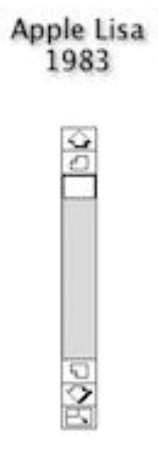
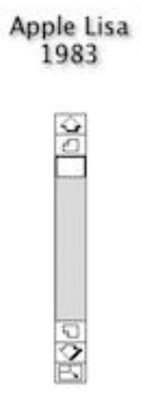

Macintosh (1984) left
Windows (1985) right
 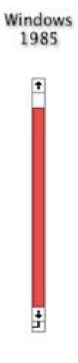
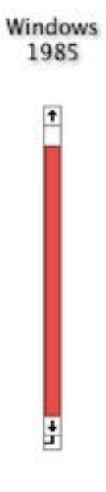

NeXT Step (1989) left
Windows 3.0 (1990) right
 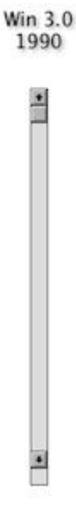
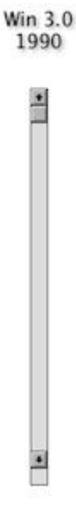
 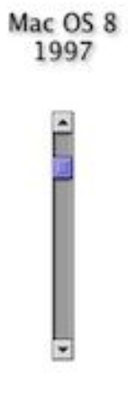
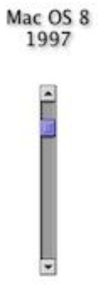
Mac OS 8 (1997) left
Mac OSX (2001) right
 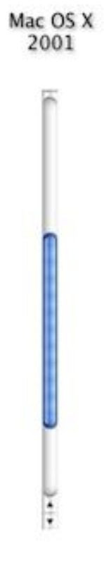
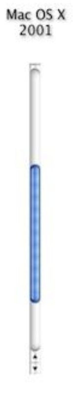

Windows XP (2001) left
IOS (2007) right

 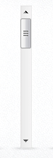
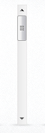
Windows 7 (2009) left
OSX Lion (2011) right


Windows 8 (2012)